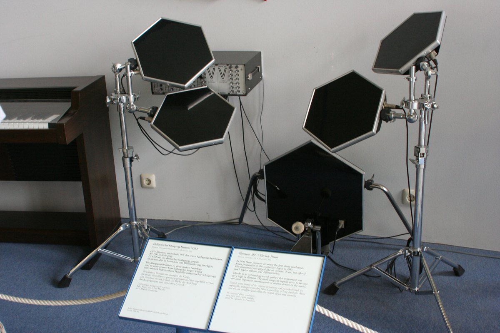
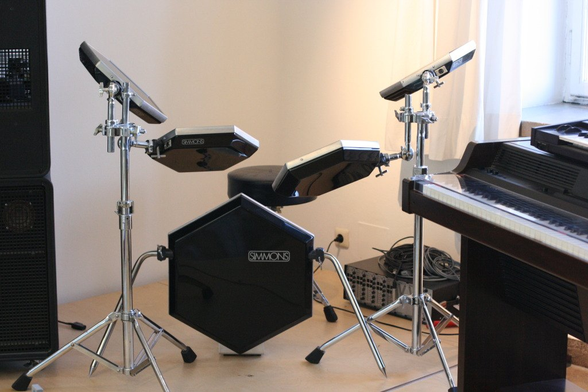

1981
Musicaid / Simmons Electronics (Dave Simmons, Richard James Burgess)
Simmons SDSV Electronic Drum
The first viable electronic drum kit, whose solid riot-shield-plastic hexagon pads are struck to drive analog synth modules — a sensor-first playing surface with no acoustic shell

Overview
Deep dive
Media
